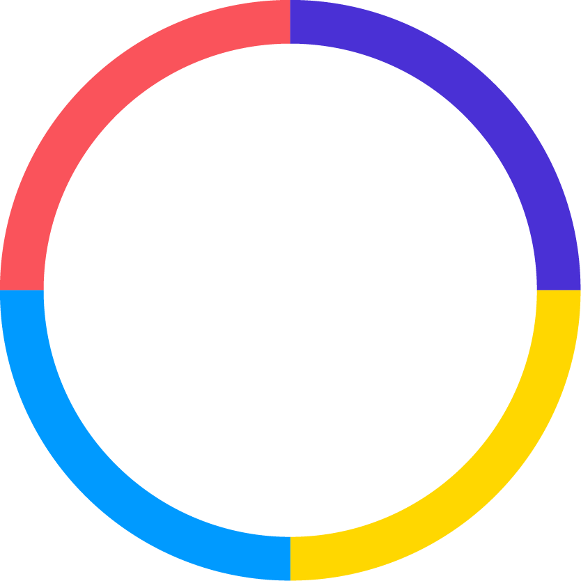

Color Switch is a fun game made to be played in a single player mode. The user controls an icon which moves through a space filled with obstacles and they can only pass through obstacles of the same color as the user. This was made using JavaFX and was made with explicit use of OOPS. It was a game made for the AP final project.
